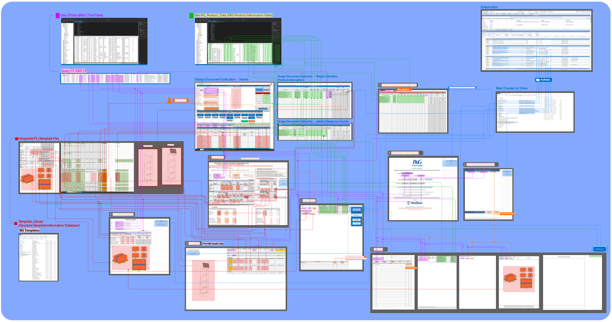

Project Overview
The Design Document Suite is an internal app that I designed and developed for designers at WestRock. Designers use this system to generate hundreds of daily documents that approve and ship Procter & Gamble merchandising displays to consumer stores all around North America.

|
The Problem it Solved
The broad goal of this application was to take P&G Database information and distribute it to customer required documents, eliminating clearical errors and redudant data entry.
Designers were once spending hours of time manually completing documentation and copying the same information over and over across these documents,
and this application reduced hundreds of hours a year and improved overall quality to a significant degree. Developing automated quality checks lead to a redistribution of labor in our QA department, allowing us to bring on additonal business.
The data flow is a combination of various inputs, from WestRock as well as P&G.
This database includes information such as product count weight, dangerous goods shipping labels, templated projects and other various project data points.
|
Requirements Analysis
The project required a deep analysis of our process, as well as our customer's process and boiling that down to a simple series of steps and then expanding upon it's complexities to outline the required features and steps needed to develop this appilcation.

|
Early Stages
The Design Document Suite's early years were developed inside an excel spreadsheet using VBA to automate the process and connect to a Microsoft SQL Database. Using NAS to store other spreadsheet's with project information, querying and dynamically changing interfaces, the tool mimicked the web app it is today.
|
Requirement Mapping
 Detailed Outline
Detailed Outline
